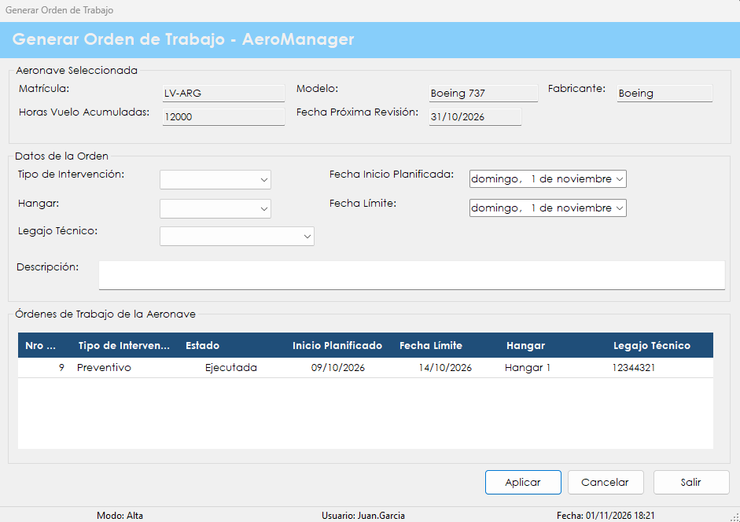
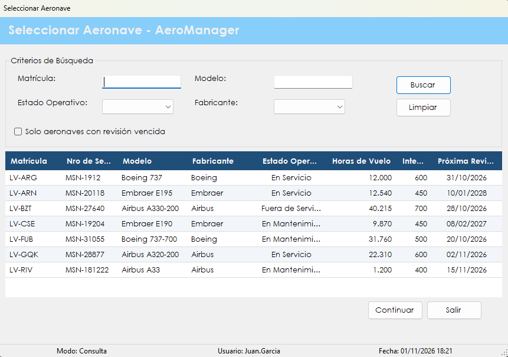

Abre una orden de mantenimiento para una aeronave: define qué tipo de trabajo se hará, dónde, cuándo y qué técnico queda a cargo.
Todo trabajo de mantenimiento empieza con una orden. La orden deja asentado el tipo de intervención, el hangar, las fechas planificadas y el técnico responsable, y es la base sobre la que después se registra lo que realmente se hizo.
El flujo tiene dos pantallas. En Seleccionar Aeronave se busca la aeronave dentro de la flota, con la posibilidad de ver solamente las que tienen la revisión vencida. En Generar Orden de Trabajo se cargan los datos de la orden y se consultan las órdenes anteriores de esa aeronave.
Una orden nueva queda en estado Asignada y a disposición del técnico elegido, que la retoma en Registrar intervención.
Desde el menú principal, en Mantenimiento de Aeronaves › Generar Orden de Trabajo. La opción aparece si el rol del usuario incluye la patente correspondiente. Primero se abre Seleccionar Aeronave, y la pantalla de la orden se abre con el botón Continuar.

Pantalla Seleccionar Aeronave
| Control | Para qué se usa |
|---|---|
| Matrícula y Modelo | Filtran por el texto escrito, aunque sea solo una parte. |
| Estado Operativo | En Servicio, En Mantenimiento o Fuera de Servicio. |
| Fabricante | Boeing, Airbus o Embraer. |
| Solo aeronaves con revisión vencida | Deja únicamente las aeronaves cuya próxima revisión es hoy o una fecha anterior. |
| Buscar | Aplica los criterios. También se activa con la tecla Enter. |
| Limpiar | Borra los criterios y vuelve a mostrar toda la flota. |
| Grilla de aeronaves | Muestra Matrícula, Nro de Serie, Modelo, Fabricante, Estado Operativo, Horas de Vuelo, Intervalo de Revisión y Próxima Revisión. Al hacer clic en un encabezado se ordena por esa columna. |
| Continuar | Abre la orden para la aeronave seleccionada. |
| Salir | Vuelve al menú principal. También se activa con la tecla Esc. |
Pantalla Generar Orden de Trabajo
| Control | Para qué se usa |
|---|---|
| Aeronave Seleccionada | Muestra Matrícula, Modelo, Fabricante, Horas Vuelo Acumuladas y Fecha Próxima Revisión. No se puede editar. |
| Tipo de Intervención | Preventivo o Correctivo. |
| Hangar | Hangar 1, Hangar 2 o Hangar 3. |
| Legajo Técnico | Técnico a cargo, elegido entre los usuarios activos con rol de técnico aeronáutico. Se muestra su apellido, nombre y documento. |
| Fecha Inicio Planificada | Día previsto para empezar el trabajo. |
| Fecha Límite | Día máximo para terminarlo. |
| Descripción | Detalle del trabajo a realizar. La tecla Enter agrega una línea nueva. |
| Órdenes de Trabajo de la Aeronave | Historial con Nro Orden, Tipo de Intervención, Estado, Inicio Planificado, Fecha Límite, Hangar y Legajo Técnico. |
| Aplicar | Valida los datos y genera la orden. |
| Cancelar | Borra lo cargado en los datos de la orden. |
| Salir | Vuelve a Seleccionar Aeronave, sin pedir confirmación. |

| Situación | Qué significa y qué hacer |
|---|---|
| "Debe seleccionar una aeronave de la grilla." | Se presionó Continuar sin elegir una fila. |
| "No se encontraron aeronaves que cumplan los criterios de búsqueda." | Ninguna aeronave coincide con los filtros. Conviene usar Limpiar y buscar con menos criterios. |
| "No hay aeronaves registradas en la flota." | No hay aeronaves activas para mostrar. Se cargan desde Maestro de aeronaves. |
| "Error al recuperar las aeronaves:" seguido del motivo | No se pudo traer la flota. Después de los dos puntos se indica la causa técnica. |
| "No hay técnicos aeronáuticos activos registrados en el sistema." | La lista Legajo Técnico queda vacía y no se puede completar la orden. Un administrador tiene que dar de alta o reactivar un técnico en Gestión de usuarios. |
| "Error al recuperar los técnicos:" seguido del motivo | No se pudo cargar la lista de técnicos. Después de los dos puntos se indica la causa técnica. |
| "Error al recuperar las órdenes de trabajo:" seguido del motivo | No se pudo cargar el historial de la aeronave. Después de los dos puntos se indica la causa técnica. |
| "Debe completar todos los campos obligatorios de la orden de trabajo." | Falta el tipo de intervención, el hangar, el técnico o la descripción. |
| "La fecha límite de finalización no puede ser anterior a la fecha de inicio planificada." | Hay que corregir alguna de las dos fechas. Pueden ser el mismo día. |
| "La aeronave ya posee una orden de trabajo abierta. No es posible generar otra hasta que se ejecute." | Hay una orden de esa aeronave que todavía no llegó al estado Ejecutada. Hay que completarla antes de abrir una nueva. Se la puede ver en el historial de la misma pantalla. |
| "El registro fue modificado o ya no existe. Vuelva a buscarlo e intente nuevamente." | No se pudo guardar la orden. El historial se actualiza: hay que revisarlo y volver a intentar. |
| "Orden de trabajo generada correctamente. Nro de Orden:" seguido del número | La orden quedó registrada con el número informado y figura en el historial. |
| "Error al generar la orden de trabajo:" seguido del motivo | La orden no se guardó. Después de los dos puntos se indica la causa técnica. |
| "La operación se registró correctamente, pero no pudo asentarse en la Bitácora:" seguido del motivo | La orden se generó, pero el evento no quedó en la bitácora. Después de los dos puntos se muestra el motivo técnico. Conviene avisarle al administrador. |